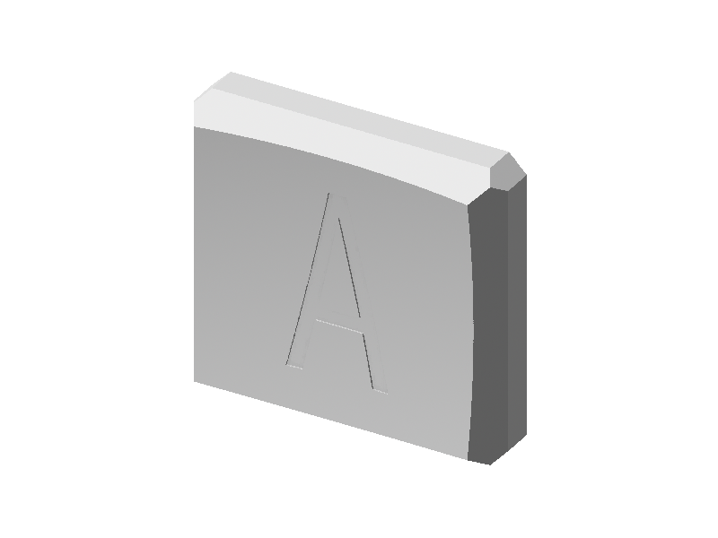
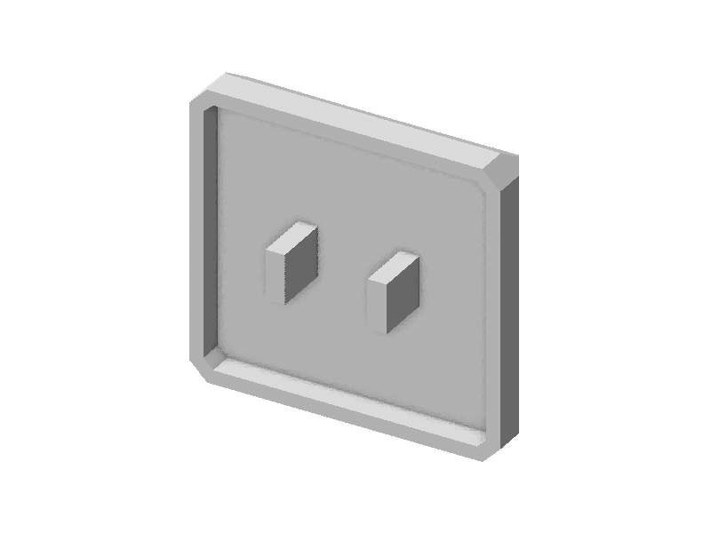
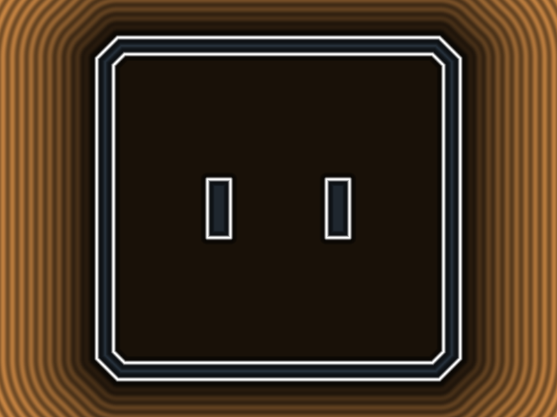

cryptodancer
Drafted with AI, not yet reviewed
by Reicryptodancer/keycap.scad
sdf-native planes for the bevels and a sphere for the dish, the legend engraved along it
A flat cap for the cryptodancer keyboard’s Kailh Choc v1 switches: a
chamfered hat with a shallow spherical dish, a legend cut into the dish,
and a bar for the homing keys. Ported from
src/cryptodancer/keycap.scad; export-legends.py meshes a whole set.
Set SYMBOL to the legend, DOT for the homing keys.
- Compared with the original: within 0.01 mm.



Legends
Some of the set, SYMBOL and DOT set for each as export-legends.py sets them.


Files
Source
// A flat cap for the cryptodancer keyboard's Kailh Choc v1 switches: a // chamfered hat with a shallow spherical dish, a legend cut into the dish, // and a bar for the homing keys. Ported from // `src/cryptodancer/keycap.scad`; `export-legends.py` meshes a whole set. // // Set SYMBOL to the legend, DOT for the homing keys. // idiom sdf-native: planes for the bevels and a sphere for the dish, the legend engraved along it import "keycap" as keycap; const SYMBOL = "A"; const DOT = false; // --- Parameters --- const X = 17.4; const Y = 16.4; const CORNER = 1.0; // the chamfers on the outline's corners const HAT = 3.8; // the hat's height, from the pocket's floor const POCKET = 1.4; // how deep the switch's top sits in it const WALL = 0.8; // the pocket's wall const BEVEL = 30.0; // the sides' bevel, from the vertical const BEVEL_FOOT = 0.4; // where it starts, above the pocket's ceiling const DISH_R = 80.0; const DISH = 0.7; // the dish's depth const LEGEND = 0.1; // the legend's depth under the dish // --- Hat --- // z = 0 is the pocket's ceiling, where the switch's top meets the cap. let top = HAT - POCKET; // OpenSCAD's offset(1) offset(-1) under $fn = 1 is a circle of 3 segments, // which leaves a single straight segment across each corner: a chamfer. let outline = rect([X, Y], #{chamfer: CORNER}); // A rotated cube per side cuts the bevel; each cut is a plane, written // here as one, its normal of unit length so that it is a distance; abs() // mirrors it onto the opposite side. fn bevel(across, half) { let a = global::BEVEL * PI / 180.0; (abs(across) - half) * cos(a) + (z - global::BEVEL_FOOT) * sin(a) } // The dish is a sphere's cap; its centre is far above, so the field is // exact, and the legend follows the dish by offsetting the same sphere. let dish = sphere(DISH_R + DISH).move([0.0, 0.0, DISH_R + top]); let hat = outline.extrude([-POCKET, top]) .difference(outline.offset(-WALL).extrude([-POCKET - 1.0, 0.0])) .intersection(max(bevel(x, X * 0.5), bevel(y, Y * 0.5))) .difference(dish); // --- Legend --- // The letters are cut LEGEND deep under the dish: where they lie within // LEGEND of the dish's sphere, which is the sphere grown by LEGEND, as // OpenSCAD's intersection with a slightly larger sphere made it. let letters = keycap::legend(SYMBOL, keycap::FONT).extrude([0.0, HAT]); let cap = hat.engrave(letters, dish, LEGEND); // --- Stem and dot --- let parts = [cap, keycap::choc_stem(keycap::CHOC)]; // A bar across the dish's near edge, its axis just under the surface. if DOT { parts.push(cylinder(0.25, 5.0).rotate_y(90).move([0.0, -Y * 0.5 + 2.0, top - 0.5])); } // --- Cap --- // Printed on its side, as the original exports it. bounds([-9.5, -3.0, -9.0], [9.5, 3.7, 9.0]); resolution(20); draw(union(parts).rotate_x(90));